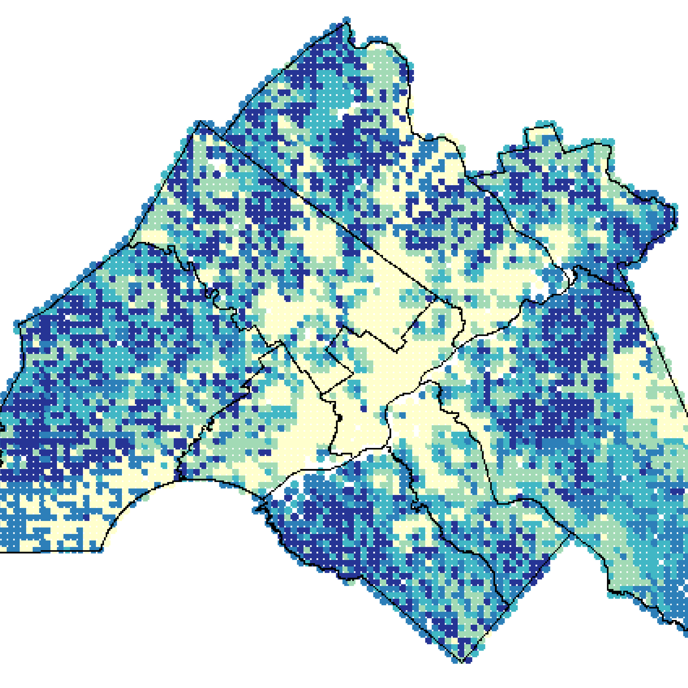

Research

Health and social inequalities in Urban Heat Exposure Areas in New Orleans
2024-10-01 How do health and social inequalities shape urban heat exposure in New Orleans?
This study examines disparities in urban heat exposure across New Orleans, identifying vulnerable populations and analyzing the health impacts. It leverages geospatial and socioeconomic data to propose equitable strategies for mitigating heat-related risks and improving community resilience.

Impacts of Land Use and Socioeconomic Patterns on Urban Heat Island in Baltimore City
2020-05-01This paper examines the relationship between land surface temperature (LST), land use, and socioeconomic variables, highlighting disparities in heat exposure. It identifies impervious surfaces and vegetation as primary drivers and explores equity-focused strategies to mitigate urban heat impacts.

Greening Philadelphia:
Measuring Impacts of Urban Greening Projects
2020-12-18
Are urban greening projects making our city greener? This project applies remote sensing approaches to measure the change of green in Philadelphia Navy Yard.
Projects
- All
- Data Science
- Geospatial Analysis
- Design & Visualization


